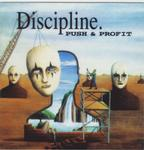

Home Artist links Label link

| Artist: | Discipline |
| Title: | Push And Profit |
| Label: | Periferic Records |
| Length(s): | 56 minutes |
| Year(s) of release: | 1994/2000 |
| Month of review: | 10/2000 |
Line up
Matthew Parmenter - vocals, backing guitar, violin, programming, tambourine,
recorder, synth
Jon Preston Bouda - lead guitar, backing vocals
David Krofchok - piano, organ, synth, backing vocals
Matthew Kennedy - bass
Paul Dzendzel - drums and percussion
Tracks
| 1) | Diminished | 7.36
|
| 2) | The Reasoning Wall | 7.22
|
| 3) | Carmilla | 9.39
|
| 4) | The Nursery Year | 5.18
|
| 5) | Faces Of The Pretty | 4.47
|
| 6) | Systems | 7.26
|
| 7) | Blueprint | 6.02
|
| 8) | America | 7.42
|
Summary
The debut of Discipline, one of America's finest now released on the Hungarian
Periferic label.
The music
Diminished opens soothingly, but also darkly with repetitive acoustic guitar
and softly wailing violin. The vocal part opens as quietly. In the also
rather relaxed chorus, the vocal melodies get more form and definition.
One might be reminded here of the softer parts of early Genesis.
The music is now more or less repeated but on a more powerful, expressive note
(and with differing lyrics). The bridge is back to the relaxedness of ere,
but now with piano. Then the music builds up again with a grinding electric
guitar in the back. This track is quite strongly already in the style of
the follow-up Unfolded Like Staircase: tense and varied, although maybe a bit
lighter. The Reasoning Wall seems like Diminished to have some philosophical
overtones concerning religion. It opens with easy-going piano. The vocal
melody is definitely oddball with some neo-Crimsonesque guitar tones and
quirky organ playing. The music is maybe a more "progressive", but the music
hardly sounds very serious, like also Genesis did in their Gabriel period.
In fact some passages seem to derive directly from there, notwithstanding
the also present sunny Caribbean tones. Afterward the music takes on a more
typical Discipline sound with dark and melodic leanings. The guitar work
is quite Hackett oriented here. The Caribbean intermezzo's have good rhythmic
touches. I'm not fond of the vocal melody itself though.
Carmilla is the longest track on the album slightly below 10 minutes. Bass
playing and the somber vocals dominate the dark opening of this track.
Then the music takes a turn for the up-beat. Again a track that is similar
in style to Unfolded... with good melodic material and also a good way of
working with tension in telling a story. It does seem that compared to Unfolded
there is a bit less variation in melody and variation is more brought in
by differences in arrangements (like the string like sounds in the second
part). A very flowing song, with a distinctive intermezzo in which the
tempo goes up a bit and the music becomes more "percussive".
The Nursery Year opens with a nice theme on a musical box. The music is
now more like a lullabye, although the first lyrics belie the ending which
is not friendly at all. The music also becomes more menacing in this
later part. Faces Of The Petty is a catchy track with quickly sung
lyrics about it seems the pettiness found in United States. A distinctive
track that might have done well as a non-progressive song (except maybe for
the funky sounding Death To Those... part, that might go a bit too far).
Systems is back to "romantic" music, somewhat jazzy at first. The vocal
part however is quite different, slow moving (in a strange way reminding
me of a Neal Morse ballad), but the chorus is again quite jazzy sounding.
Moody music until some fast piano breaks that spell. The music then winds
down a bit and goes back to the theme of the beginning. A moody track
that sounds rather like Spock's Beard, but since the song is from 1989, I
guess this is no influence, but a similarity.
After Blueprint, the only instrumental (and good enough for me), we come to
the distinctive America (nope not a cover). America has some very good and
appealing vocal melodies. The music is quite acoustic and intricate with
its seeming simplicity. Still lots of things are happening. A pleasant sounding
conclusion to the album where I'm sometimes reminded of Led Zeppelin. Not that
this track is so heavy, but some the strumming acoustic guitar refers to them.
Conclusion
This is a good record and worth your attention, especially if you like older
Genesis and do not mind the tension inherent in King Crimsons music. The name
of the band might be like the eighties Crimson incarnation, the music is
definitely different, more romantic, more melodic and not as neurotic. Like I
said a good record, but, of course, the second one was and is much better.
So do yourself a favour and go and find the second one first. My idea is that
then you'll be back to get this one.
© Jurriaan Hage